Unit Three -- Audio
Introduction to Audio Storage
Sound
Sound moving through the air is composed of small changes in air
pressure that move rapidly (at the speed of sound, 1,230 km/h at sea
level) out from the source. In our ears there is a small membrane
and a set of bones that is succeptible to these tiny (and very rapid)
changes in pressure. Here is a graph of what the pressure
recorded near by a set of hands clapping one time looks like (this was
recorded by a microphone over 5/100ths of a second or 0.05
seconds. Listen to the
audio file, save to your computer and
open in VLC or Audacity):

As you can see, a sound that we think of as one instantaneous event, is
actually composed of several different changes in pressure.
Spikes above the middle of the graph indicate higher pressure, and
below the graph indicate lower pressure. We can use a microphone
to record these changes in pressure. A microphone has a component
that is succeptible to tiny differences in pressure (like a very small
balloon) and couples that with a component that can change the amount
of electrical voltage moving through a circut. There are many
different methods for doing this, but the end result is that all
microphones convert the changes in pressure that pass over them into
changes in electrical voltage that can be sent down a wire into a
recording device, in this case a computer.
Because sound generally
doesn't move any air, it simply compresses/decompresses it to
higher/lower pressure for a split second at a time, the pressure
changes above and below the curve must balance out. Each time the
pressure goes through all the phases: go up above the curve, come back
down to the curve, continue down below the curve, and finall come back
up to
the curve; making one complete loop, this is called a cycle. The
number of cycles per second
that the sound does this is is called the rate, the unit for which is
Hertz, abbreviated Hz. So if a particular sound is at 500 cycles
per second, we call that 500Hz. We can also use the standard
metric pre-fixes for it. A sound at 31,000 Hz could be written as
31kHz. Just for a reference, the human ear can detect sounds from
approximately 20Hz up to 20kHz.
The way we hear the frequency is as different tones. It is
possible that we will have a tone with only a single frequency.
An example of that is below with a 2kHz frequency and the lenght of the
graph is only 0.01 seconds long:
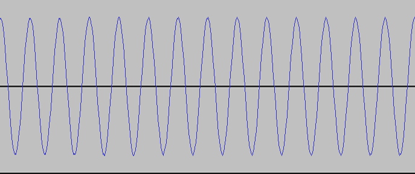
As you can see, it takes exactly 1/2000th of a second for the wave to
go from the center up, all the way down, and back to the center.
Here is a longer example of the same
sound to listen to (save it and open it in VLC or Audacity). You
can see that this pure tone sample is a lot different than the clap
example above. This is because, most sounds that we hear aren't
exactly one frequency, but rather a mixed-up jumble of frequencies that
we hear all together. What happens is we'll hear thousands of
different frequencies each second, each for a very short amount of
time. The way this happens, it that the waves of the frequencies
will either work together to make that particular part stronger, or go
against each other to make a part weaker.
Below is two sounds, 2.333kHz on top and 2.000kHz in the middle, which,
when added together, make the sound on the bottom:

You can see in this image, that where the high and low parts of the
wave are together and line up, the wave's get bigger. Where they
don't line up, they cancel each other out, and become smaller.
This audio file will play all
three tones, first 2.333kHz, then 2.000kHz, then the combination of
both. By combining the correct sets of frequencies, for the
correct duration, you can make any sound imaginable.
As we saw before, when we combine different frequencies, it changes
the height of the waves, this height (both positive and negative) is
called the amplitude, and represents how loud the sound is. The
higher the waves go, the louder the sounnd you will hear. This
scale is generally measured in decibles (dB). They range from
zero (0dB) being the quietest sound perceptable to the human ear (at
1kHz), to 194dB being the loudest sound that the earth's atmophere can
carry. Some examples in between: calm breathing 10dB, a normal
conversation 40-60dB, TV at a normal level 60dB, a busy roadway 80dB, a
jack hammer 100dB, a jet engine 130dB, and a rifle being shot
160db.
For an example, lets look at this audio track,
from the trailer for the open source movie sintel, in audacity.
As it plays, you can see that the louder parts show higher peaks on the
intensity scale. If you want to watch the video that goes with it
first, you can get that here.
Pulse Code Modulation - Wave Properties
When sound waves, or waves of change in air pressure, move through
the air, they always vary smoothly. There are never any
instantaneous jumps in pressure, just smooth changes in pressure that
can happen in incredibly short amounts of time. If we zoom in to
a small enough time, there will always be a nice and smooth curve, like
the last few above. Mathematically this is called being continuous
(in both time and frequency).
For example, this is a possible (even typical) graph of sound:
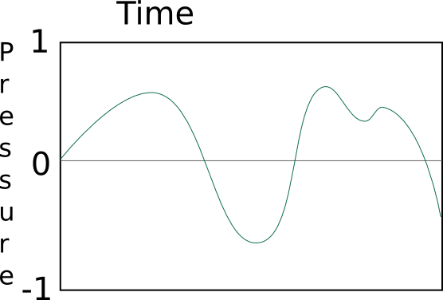
This is inpossible, the pressure can not instantaneously jump from
one value to another:
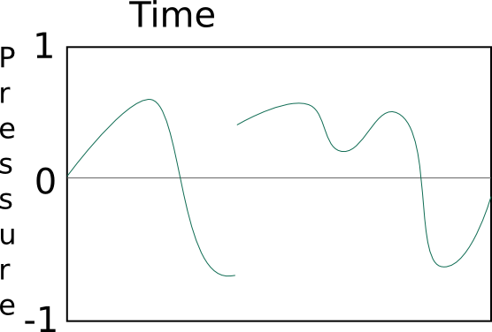
This is inpossible, there is always some amount of pressure (even if
that amount is zero), it can never not be there:
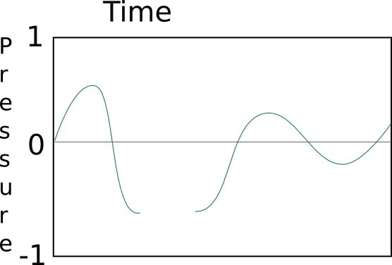
Analog to Digital Conversion
When we make an analog recording of a sound, say on a cassette tape
or vinal record, we are recording the change in voltage output by the
microphone of the continuous changes in the pressure. However,
digital devices (Compact Disc (CD), computer, cell phone, etc.) are not
capable of storing this continuous data. For a digital device,
everything must be broken down into numbers (ones and zeros). So
the digital device can record a number of the amount of voltage put off
by the microphone. The catch is that it can't do it at every
instant, it has a limited number of times per second that it can make a
reading of the voltage and record its value as a number. The
general term for this is an analog to digital conversion (A to D, A-D,
ADC).
Luckily
modern electronics are very powerful, and can easily do one of these
analog to digital conversions many thousands of times every
second, each individual conversion being called a "sample". In
fact they are capable of recording so fast that the
human ear can't even tell that is was ever made into a digital
signal! The same thing happens when we play digital audio back
out. The digital device does a digital to analog conversion (D to
A, D-A, DAC) to
get the voltage numbers stored back to actual voltages of
electricity. Then the voltage travels to a speaker (or very small
speakers in headphones) which uses the change in voltage to run a
device that can make rapid changes in air pressure...and we hear
sound. These analog-to-digital and digital-to-analog conversions
are absolutely essential for audio, but can also be applied to lots of
other things as well. In fact anything that can be represented by
an electrical voltage can be converted and used as a digital
signal. These signals could be something as simple as setting the
level of light in a room, or as complicated as controlling a car's
engine when you push the gas pedal.
TODO: picture of A->D->processing/storage->D->A cycle
For more on these A-D and D-A conversions check out these articles:
http://en.wikipedia.org/wiki/Analog-to-digital_converter
http://es.wikipedia.org/wiki/Conversión_analógica-digital
http://en.wikipedia.org/wiki/Digital-to-analog_converter
http://es.wikipedia.org/wiki/Conversor_digital-analógico
So once a digital recording device has done an analog to digital
conversion on a voltage signal, it needs to store that data digitally,
even if only for a moment while it is transfered to another device, in
general this is called Quantization (http://en.wikipedia.org/wiki/Quantization_(signal_processing)
http://es.wikipedia.org/wiki/Cuantificación_digital).
There are many ways to do this, but the most comon one used for audio
is called Pulse-Code-Modulation.
http://en.wikipedia.org/wiki/Pulse_code_modulation
http://es.wikipedia.org/wiki/Modulación_por_impulsos_codificados
Pulse code modulation works by taking a sample at a certian rate (a set
of pulses every X microseconds) and storing the value as a "code" on a
scale.

Here you can see an example voltage curve in red. The line in
gray symbolizes the respective coding for the signal (on a scale from
0-15, 4-bit). Each hash mark along the bottom is one time
step.
Here's another example, from the same 2kHz tone that we used
above. This time the graph is only about 1/1000th of a second
long (0.001 seconds). Each point that you see on the graph is where a
sample of the audio was taken.
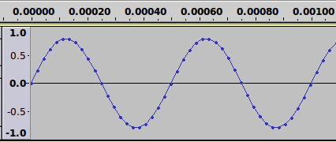
Bits Per Sample
One of the factors that determines how good a digital audio file sounds
to a human ear is the numbre of bits used to store the value of the
voltage that was converted to a digital signal. When we worked
with images, we used 8-bits for each of our three color channels
(24-bits color). Here the most comon format you will see is
16-bit which gives you 2^16 or 65,536 different possible values for
each A-D conversion. This is what is used in things like CDs and
iPods, however when audio professionals work in recoring studios, they
often use 24-bit values (2^24 or 16,777,216 possible values) for richer
sounds. Using less bits will sometimes cause the audio to not
re-produce the sounds very well because anything that falls outside the
range of values will be clipped off.
Here's an example of clipping:
You can see that that the data that falls outside the values that can
be represented isn't correctly re-produced. This can then sound
like noise or muted sounds in your audio recording.
In addition to 16 and 24 bit storage, there a method of storage called
"floating point". Floating point takes up 32-bits per sample, but
is used differently. 24-bits of the data are used to store a
value for the sample, the remaining 8 bits are used as an exponent.
This means that floating point values can represent extremely tiny
changes in value that are close to zero. It also means there is
effectively no upper boundary on the scale (in either the positive or
negative direction). As an example of this can be found in the
image of the 2kHz tone above in the PCM section. Notice that on
the left, the scale goes from -1.0 to +1.0, instead of something like 0
to 65535. This is the typical way that floating point
values are written. In floating point, the signal is free to go
above those limits without loss. Because of this, floating point
values are often used during the recording and/or editing process.
Sample Frequency
The other major component that affects how a digital audio recording
sounds is the numbre of A to D samples that are taken every second,
also know as the frequency. This number is usually denoted in
Hertz (Hz) which simply means "cycles per second". The most
important aspect to choosing a sample frequency is the Nyquist theorem,
which states that the accurately re-produce a sound, you need to have a
sample rate that is twice as high as the highest frequency you need to
re-produce. As was explained before, the human ear can typicall
hear frequencies up to about 20,000Hz or 20kHz. This means that
the minimum frequency that we need to accurately re-produce sound is
40kHz. However there also needs to be some extra room to filter
out any stray (non-audible) frequencies, so the most common recording
frequencies are 44.1kHz for CD audio, and 48kHz for typical digital
audio. There are also some formats specially designed for
recording that go to 96kHz or beyond, and this is to allow for the
creation of even better filters for the non-audible freqiencies.
Just because it takes at least 40kHz to accurately record everything
the ear can hear doesn't mean that lesser frequencies are not in
use. For example on telephones any time a land-line call
goes outside the neighborhood or any time on a cell phone the audio is
digitized at an 8kHz frequency. This sounds alright when you just need
to hear what the person on the other end is saying, but would sound
awful if you tried to listen to a musical performance digitized at
8kHz. In this day and age however, and audio engineer would only
look at using a sample frequency lower than 40kHz if there were serious
bandwidth or storage constraints. For this course we will use at
least 44.1kHz or 48kHz audio.
Endianess
Endianess is an artifact of the growth of computer technoligies in
different organizations at the same time. This refers to the way
bytes are stored in a computers memory. The details of it aren't
important for digital media creation, just know that there are two
different formats: Big-Endian and Little-Endian. By themselves
they aren't compatible, but it is trivial to convert between them.
Channels
The channels used in digital audio are different from how channels were
used in images. In this case, each channel is a completely
seperate recording, that just happens to be set to play back (and often
recorded) at the same time. The channels are usually used to
represent the direction that the audio can come from.
Stereo audio has two channels, a left channel and a right
channel. This allows for sounds that seem like they are coming
from one direction or the other. CDs and FM radio use stereo
sound. (http://en.wikipedia.org/wiki/Stereo_sound
http://es.wikipedia.org/wiki/Sonido_estereofónico)
The more advanced format is called surround sound, which is generally
listed has having 5.1 channels. The five main channels are
front-left and front-right (these same as stereo, and are used when
there are only stereo outputs available), front-center, back-left, and
back-right. The .1 channel, is called the Low Frequencey Effects
channel and is designed for use with subwoofers that only produce
sounds from 3-120Hz. Because of this low frequency, it is
possible to use a much lower sample frequency with this channel.
However most computer hardware just treats this as its own complete
channel, hence computers that support surround sound are often said to
have six channel sound instead of just 5.1. (http://en.wikipedia.org/wiki/Surround_sound
http://es.wikipedia.org/wiki/Surround)
Formats
Uncompressed Formats
Digital audio has a few, very common uncompressed formats that it
can use. They take PCM audio with the paramaters described above,
and wrap it up into a neat file. The two main formats you will
find are CD Audio and WAV. You will often find other formats that
simply
specify a PCM type (linear, mu-Law, A-Law), a size (8-bit, 16-bit,
24-bit,
etc), signed or unsigned, a frequency (32, 44.1, 48), endianess (big or
little), number of channels, and bit-rate.
CD Audio - The most common format you will find is CD audio, it is
uncompressed audio. This format is 16-bit, Linear Pulse Code
Modulation (L-PCM), signed data, running at a 44.1kHz sampling rate,
with two channels of audio (stereo). It runs at 146KB/s.
WAV - Unlike CD Audio, that specifies exact paramaters, WAV files are
capable of contaning many different formats, however the most common
one that it contains is identical to the CD audio format: 16-bit,
L-PCM, signed, 44.1kHz. WAV files are almost always found with
uncompressed data, however it is possible to use compression inside
them.
Compressed Formats
Digital audio can take up quite a bit of space. Lets look at
typical CD audio: 16-bit samples multiplied by 44.1kHz multiplied by
two channels gives 1,411,200 bits/second. This is equal to
176,400 Bytes/second or 176KB/s or 10.6MB/min or 635MB/hr. These
numbers will look nice and tame when we get to the raw video rates in
the next section, but they are still a lot to store, especially when a
lot of that space is basically redundant. There are a few
compression formats that use lossless compression, so that no
information is lost. The leading one of these is called FLAC, but
there are also others from Apple and Microsoft. However, the
majority of audio formats are lossy formats. The are used for
everything from the audio on your DVD and BluRay disk, to MP3 players
like the iPod and cellphones, and even podcasts and skype.
MP2 - Stands for MPEG-1 audio, layer 2. Often used in
broadcasting.
MP3 - Stands for MPEG-1 audio, layer 3. This is the most
popular audio format, as is evidinced by the number of MP3 players
available at electronics stores. Almost all computers and
consumer audio players can play this format.
AC3 - This is also known as Dolby Digital sound, made popular by its
use in movie theaters. It is used on many DVDs and supports 5.1
channel sound.
FLAC - Free Lossless Audio Codec. This audio format was made
to take uncompressed formats and shrink them down, without losing any
quality at all. Audio in this format can be converted back to an
uncompressed format, and the resulting file would be identical to the
original uncompressed file. This is often used for editing and
archival, where you want to be sure not to lose any information.
Files are usually about half the size of an uncompressed file.
This format is open source, and free of royalties, so it can be used
anywhere.
Ogg/Vorbis - This is the leanding open source compressed audio
format. Its compression is aproximately twice as good as MP3, and
on par with AAC or WMA compression.
AAC - Advanced Audio Codec This is Apple's primary audio
codec. It is available on Macintosh, in iTunes, and on
iPods/iPhones.
WMA - Windows Media Audio. This is microsoft's primary audio
codec. It is available on Windows computers and many portable
devices.
Speex - This is a codec that was developed specifically for compressing
human voices. It is not a high fidelity codec, and should not be
used with music or sound effects, but is good at accurately
re-producing the human voice.
Converting Audio
Converting audio in Ubunt is extremely easy. First, download a sample audio clip, which is
encoded in the uncompressed WAV format. Next, open the sound
converter application.

Then lets open the file we downloaded in Sound Converter.
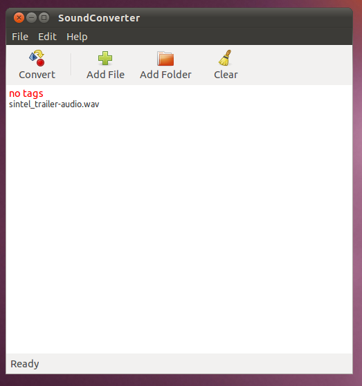
Sound converter is an application that will let you convert one audio
format to another one. You can load in a single file, or many
different files that can all be converted at the same time. To
select the type of format you want to convert to and other details, use
the prefrences menu.
The first item in the preferences menu is the option to change where
the converted files are placed. For a single file such as this,
it is probably easiest to simply have the output go to the same
directory. However, if you were going to convert your whole music
library at once, you may want to utilize this option to help you sort
it.
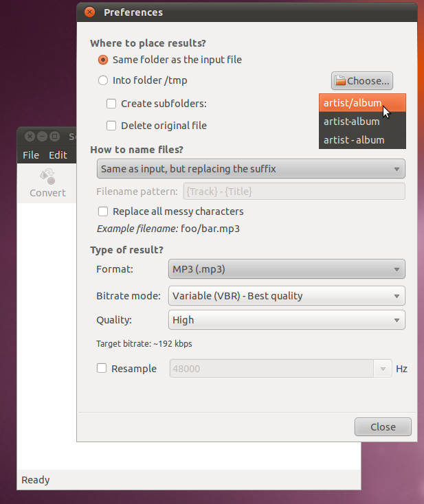
Naming files is similar. For a single file that we need in a
different format, just change the suffix (from .wav to something else:
.flac, .ogg, .mp3). If you were doing a lot of files, you might
want to utilize these options.
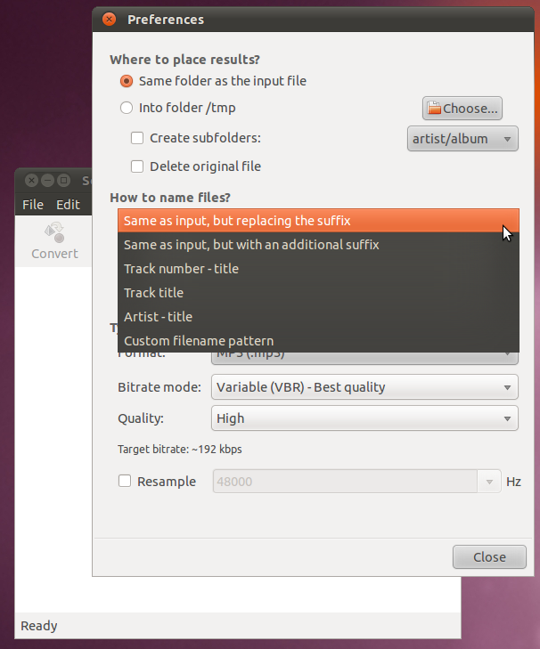
The next option is the format. We're going to convert this into
FLAC, OGG-Vorbis, and MP3 formats. It is already a WAV so no need
to do that, and with the above formats, we don't really have a need for
AAC.

The final option is the ability to re-sample to a different
frequency. You generally wouldn't want a slower frequency, as the
audio could sound worse. It also doesn't help much to copy the
file up to a higher frequency, since it can't really make up extra
data. The only real reason to change it would be if you have a
bunch of files at different rates that you need to join together.
In that case you could convert them all to the highest rate (so none of
them would be cut down).

For our first conversion, go ahead and select FLAC (Free Lossless Audio
Codec).
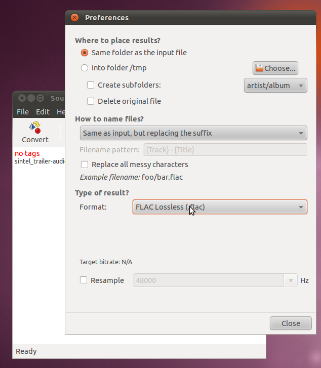
Then close the preferences dialog and click "Convert".
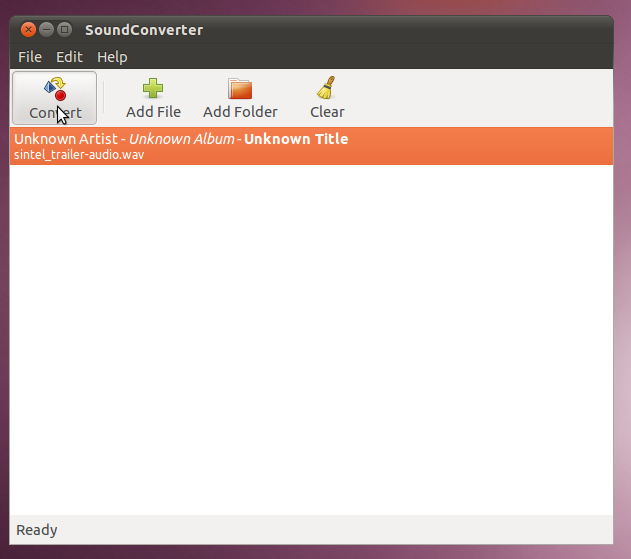
After a couple seconds it should finish, and you're new .flac file will
be out right next to the .wav file you started with.
Next lets go and make a file in the Ogg-Vorbis format. Go back
into the Preferences dialog and select the Ogg Vorbis format.
Under this format there is a new option that wasn't there for the FLAC
option, that is the Quality option.
Unit Three -- Audio
Introduction to Audio Storage
Sound
Sound moving through the air is composed of small changes in air
pressure that move rapidly (at the speed of sound, 1,230 km/h at sea
level) out from the source. In our ears there is a small membrane
and a set of bones that is succeptible to these tiny (and very rapid)
changes in pressure. Here is a graph of what the pressure
recorded near by a set of hands clapping one time looks like (this was
recorded by a microphone over 5/100ths of a second or 0.05
seconds. Listen to the
audio file, save to your computer and
open in VLC or Audacity):
As you can see, a sound that we think of as one instantaneous event, is
actually composed of several different changes in pressure.
Spikes above the middle of the graph indicate higher pressure, and
below the graph indicate lower pressure. We can use a microphone
to record these changes in pressure. A microphone has a component
that is succeptible to tiny differences in pressure (like a very small
balloon) and couples that with a component that can change the amount
of electrical voltage moving through a circut. There are many
different methods for doing this, but the end result is that all
microphones convert the changes in pressure that pass over them into
changes in electrical voltage that can be sent down a wire into a
recording device, in this case a computer.
Because sound generally
doesn't move any air, it simply compresses/decompresses it to
higher/lower pressure for a split second at a time, the pressure
changes above and below the curve must balance out. Each time the
pressure goes through all the phases: go up above the curve, come back
down to the curve, continue down below the curve, and finall come back
up to
the curve; making one complete loop, this is called a cycle. The
number of cycles per second
that the sound does this is is called the rate, the unit for which is
Hertz, abbreviated Hz. So if a particular sound is at 500 cycles
per second, we call that 500Hz. We can also use the standard
metric pre-fixes for it. A sound at 31,000 Hz could be written as
31kHz. Just for a reference, the human ear can detect sounds from
approximately 20Hz up to 20kHz.
The way we hear the frequency is as different tones. It is
possible that we will have a tone with only a single frequency.
An example of that is below with a 2kHz frequency and the lenght of the
graph is only 0.01 seconds long:
As you can see, it takes exactly 1/2000th of a second for the wave to
go from the center up, all the way down, and back to the center.
Here is a longer example of the same
sound to listen to (save it and open it in VLC or Audacity). You
can see that this pure tone sample is a lot different than the clap
example above. This is because, most sounds that we hear aren't
exactly one frequency, but rather a mixed-up jumble of frequencies that
we hear all together. What happens is we'll hear thousands of
different frequencies each second, each for a very short amount of
time. The way this happens, it that the waves of the frequencies
will either work together to make that particular part stronger, or go
against each other to make a part weaker.
Below is two sounds, 2.333kHz on top and 2.000kHz in the middle, which,
when added together, make the sound on the bottom:
You can see in this image, that where the high and low parts of the
wave are together and line up, the wave's get bigger. Where they
don't line up, they cancel each other out, and become smaller.
This audio file will play all
three tones, first 2.333kHz, then 2.000kHz, then the combination of
both. By combining the correct sets of frequencies, for the
correct duration, you can make any sound imaginable.
As we saw before, when we combine different frequencies, it changes
the height of the waves, this height (both positive and negative) is
called the amplitude, and represents how loud the sound is. The
higher the waves go, the louder the sounnd you will hear. This
scale is generally measured in decibles (dB). They range from
zero (0dB) being the quietest sound perceptable to the human ear (at
1kHz), to 194dB being the loudest sound that the earth's atmophere can
carry. Some examples in between: calm breathing 10dB, a normal
conversation 40-60dB, TV at a normal level 60dB, a busy roadway 80dB, a
jack hammer 100dB, a jet engine 130dB, and a rifle being shot
160db.
For an example, lets look at this audio track,
from the trailer for the open source movie sintel, in audacity.
As it plays, you can see that the louder parts show higher peaks on the
intensity scale. If you want to watch the video that goes with it
first, you can get that here.
Pulse Code Modulation - Wave Properties
When sound waves, or waves of change in air pressure, move through
the air, they always vary smoothly. There are never any
instantaneous jumps in pressure, just smooth changes in pressure that
can happen in incredibly short amounts of time. If we zoom in to
a small enough time, there will always be a nice and smooth curve, like
the last few above. Mathematically this is called being continuous
(in both time and frequency).
For example, this is a possible (even typical) graph of sound:
This is inpossible, the pressure can not instantaneously jump from
one value to another:
This is inpossible, there is always some amount of pressure (even if
that amount is zero), it can never not be there:
Analog to Digital Conversion
When we make an analog recording of a sound, say on a cassette tape
or vinal record, we are recording the change in voltage output by the
microphone of the continuous changes in the pressure. However,
digital devices (Compact Disc (CD), computer, cell phone, etc.) are not
capable of storing this continuous data. For a digital device,
everything must be broken down into numbers (ones and zeros). So
the digital device can record a number of the amount of voltage put off
by the microphone. The catch is that it can't do it at every
instant, it has a limited number of times per second that it can make a
reading of the voltage and record its value as a number. The
general term for this is an analog to digital conversion (A to D, A-D,
ADC).
Luckily
modern electronics are very powerful, and can easily do one of these
analog to digital conversions many thousands of times every
second, each individual conversion being called a "sample". In
fact they are capable of recording so fast that the
human ear can't even tell that is was ever made into a digital
signal! The same thing happens when we play digital audio back
out. The digital device does a digital to analog conversion (D to
A, D-A, DAC) to
get the voltage numbers stored back to actual voltages of
electricity. Then the voltage travels to a speaker (or very small
speakers in headphones) which uses the change in voltage to run a
device that can make rapid changes in air pressure...and we hear
sound. These analog-to-digital and digital-to-analog conversions
are absolutely essential for audio, but can also be applied to lots of
other things as well. In fact anything that can be represented by
an electrical voltage can be converted and used as a digital
signal. These signals could be something as simple as setting the
level of light in a room, or as complicated as controlling a car's
engine when you push the gas pedal.
TODO: picture of A->D->processing/storage->D->A cycle
For more on these A-D and D-A conversions check out these articles:
http://en.wikipedia.org/wiki/Analog-to-digital_converter
http://es.wikipedia.org/wiki/Conversión_analógica-digital
http://en.wikipedia.org/wiki/Digital-to-analog_converter
http://es.wikipedia.org/wiki/Conversor_digital-analógico
So once a digital recording device has done an analog to digital
conversion on a voltage signal, it needs to store that data digitally,
even if only for a moment while it is transfered to another device, in
general this is called Quantization (http://en.wikipedia.org/wiki/Quantization_(signal_processing)
http://es.wikipedia.org/wiki/Cuantificación_digital).
There are many ways to do this, but the most comon one used for audio
is called Pulse-Code-Modulation.
http://en.wikipedia.org/wiki/Pulse_code_modulation
http://es.wikipedia.org/wiki/Modulación_por_impulsos_codificados
Pulse code modulation works by taking a sample at a certian rate (a set
of pulses every X microseconds) and storing the value as a "code" on a
scale.
Here you can see an example voltage curve in red. The line in
gray symbolizes the respective coding for the signal (on a scale from
0-15, 4-bit). Each hash mark along the bottom is one time
step.
Here's another example, from the same 2kHz tone that we used
above. This time the graph is only about 1/1000th of a second
long (0.001 seconds). Each point that you see on the graph is where a
sample of the audio was taken.
Bits Per Sample
One of the factors that determines how good a digital audio file sounds
to a human ear is the numbre of bits used to store the value of the
voltage that was converted to a digital signal. When we worked
with images, we used 8-bits for each of our three color channels
(24-bits color). Here the most comon format you will see is
16-bit which gives you 2^16 or 65,536 different possible values for
each A-D conversion. This is what is used in things like CDs and
iPods, however when audio professionals work in recoring studios, they
often use 24-bit values (2^24 or 16,777,216 possible values) for richer
sounds. Using less bits will sometimes cause the audio to not
re-produce the sounds very well because anything that falls outside the
range of values will be clipped off.
Here's an example of clipping:
You can see that that the data that falls outside the values that can
be represented isn't correctly re-produced. This can then sound
like noise or muted sounds in your audio recording.
In addition to 16 and 24 bit storage, there a method of storage called
"floating point". Floating point takes up 32-bits per sample, but
is used differently. 24-bits of the data are used to store a
value for the sample, the remaining 8 bits are used as an exponent.
This means that floating point values can represent extremely tiny
changes in value that are close to zero. It also means there is
effectively no upper boundary on the scale (in either the positive or
negative direction). As an example of this can be found in the
image of the 2kHz tone above in the PCM section. Notice that on
the left, the scale goes from -1.0 to +1.0, instead of something like 0
to 65535. This is the typical way that floating point
values are written. In floating point, the signal is free to go
above those limits without loss. Because of this, floating point
values are often used during the recording and/or editing process.
Sample Frequency
The other major component that affects how a digital audio recording
sounds is the numbre of A to D samples that are taken every second,
also know as the frequency. This number is usually denoted in
Hertz (Hz) which simply means "cycles per second". The most
important aspect to choosing a sample frequency is the Nyquist theorem,
which states that the accurately re-produce a sound, you need to have a
sample rate that is twice as high as the highest frequency you need to
re-produce. As was explained before, the human ear can typicall
hear frequencies up to about 20,000Hz or 20kHz. This means that
the minimum frequency that we need to accurately re-produce sound is
40kHz. However there also needs to be some extra room to filter
out any stray (non-audible) frequencies, so the most common recording
frequencies are 44.1kHz for CD audio, and 48kHz for typical digital
audio. There are also some formats specially designed for
recording that go to 96kHz or beyond, and this is to allow for the
creation of even better filters for the non-audible freqiencies.
Just because it takes at least 40kHz to accurately record everything
the ear can hear doesn't mean that lesser frequencies are not in
use. For example on telephones any time a land-line call
goes outside the neighborhood or any time on a cell phone the audio is
digitized at an 8kHz frequency. This sounds alright when you just need
to hear what the person on the other end is saying, but would sound
awful if you tried to listen to a musical performance digitized at
8kHz. In this day and age however, and audio engineer would only
look at using a sample frequency lower than 40kHz if there were serious
bandwidth or storage constraints. For this course we will use at
least 44.1kHz or 48kHz audio.
Endianess
Endianess is an artifact of the growth of computer technoligies in
different organizations at the same time. This refers to the way
bytes are stored in a computers memory. The details of it aren't
important for digital media creation, just know that there are two
different formats: Big-Endian and Little-Endian. By themselves
they aren't compatible, but it is trivial to convert between them.
Channels
The channels used in digital audio are different from how channels were
used in images. In this case, each channel is a completely
seperate recording, that just happens to be set to play back (and often
recorded) at the same time. The channels are usually used to
represent the direction that the audio can come from.
Stereo audio has two channels, a left channel and a right
channel. This allows for sounds that seem like they are coming
from one direction or the other. CDs and FM radio use stereo
sound. (http://en.wikipedia.org/wiki/Stereo_sound
http://es.wikipedia.org/wiki/Sonido_estereofónico)
The more advanced format is called surround sound, which is generally
listed has having 5.1 channels. The five main channels are
front-left and front-right (these same as stereo, and are used when
there are only stereo outputs available), front-center, back-left, and
back-right. The .1 channel, is called the Low Frequencey Effects
channel and is designed for use with subwoofers that only produce
sounds from 3-120Hz. Because of this low frequency, it is
possible to use a much lower sample frequency with this channel.
However most computer hardware just treats this as its own complete
channel, hence computers that support surround sound are often said to
have six channel sound instead of just 5.1. (http://en.wikipedia.org/wiki/Surround_sound
http://es.wikipedia.org/wiki/Surround)
Formats
Uncompressed Formats
Digital audio has a few, very common uncompressed formats that it
can use. They take PCM audio with the paramaters described above,
and wrap it up into a neat file. The two main formats you will
find are CD Audio and WAV. You will often find other formats that
simply
specify a PCM type (linear, mu-Law, A-Law), a size (8-bit, 16-bit,
24-bit,
etc), signed or unsigned, a frequency (32, 44.1, 48), endianess (big or
little), number of channels, and bit-rate.
CD Audio - The most common format you will find is CD audio, it is
uncompressed audio. This format is 16-bit, Linear Pulse Code
Modulation (L-PCM), signed data, running at a 44.1kHz sampling rate,
with two channels of audio (stereo). It runs at 146KB/s.
WAV - Unlike CD Audio, that specifies exact paramaters, WAV files are
capable of contaning many different formats, however the most common
one that it contains is identical to the CD audio format: 16-bit,
L-PCM, signed, 44.1kHz. WAV files are almost always found with
uncompressed data, however it is possible to use compression inside
them.
Compressed Formats
Digital audio can take up quite a bit of space. Lets look at
typical CD audio: 16-bit samples multiplied by 44.1kHz multiplied by
two channels gives 1,411,200 bits/second. This is equal to
176,400 Bytes/second or 176KB/s or 10.6MB/min or 635MB/hr. These
numbers will look nice and tame when we get to the raw video rates in
the next section, but they are still a lot to store, especially when a
lot of that space is basically redundant. There are a few
compression formats that use lossless compression, so that no
information is lost. The leading one of these is called FLAC, but
there are also others from Apple and Microsoft. However, the
majority of audio formats are lossy formats. The are used for
everything from the audio on your DVD and BluRay disk, to MP3 players
like the iPod and cellphones, and even podcasts and skype.
MP2 - Stands for MPEG-1 audio, layer 2. Often used in
broadcasting.
MP3 - Stands for MPEG-1 audio, layer 3. This is the most
popular audio format, as is evidinced by the number of MP3 players
available at electronics stores. Almost all computers and
consumer audio players can play this format.
AC3 - This is also known as Dolby Digital sound, made popular by its
use in movie theaters. It is used on many DVDs and supports 5.1
channel sound.
FLAC - Free Lossless Audio Codec. This audio format was made
to take uncompressed formats and shrink them down, without losing any
quality at all. Audio in this format can be converted back to an
uncompressed format, and the resulting file would be identical to the
original uncompressed file. This is often used for editing and
archival, where you want to be sure not to lose any information.
Files are usually about half the size of an uncompressed file.
This format is open source, and free of royalties, so it can be used
anywhere.
Ogg/Vorbis - This is the leanding open source compressed audio
format. Its compression is aproximately twice as good as MP3, and
on par with AAC or WMA compression.
AAC - Advanced Audio Codec This is Apple's primary audio
codec. It is available on Macintosh, in iTunes, and on
iPods/iPhones.
WMA - Windows Media Audio. This is microsoft's primary audio
codec. It is available on Windows computers and many portable
devices.
Speex - This is a codec that was developed specifically for compressing
human voices. It is not a high fidelity codec, and should not be
used with music or sound effects, but is good at accurately
re-producing the human voice.
Converting Audio
Converting audio in Ubunt is extremely easy. First, download a sample audio clip, which is
encoded in the uncompressed WAV format. Next, open the sound
converter application.
Then lets open the file we downloaded in Sound Converter.
Sound converter is an application that will let you convert one audio
format to another one. You can load in a single file, or many
different files that can all be converted at the same time. To
select
the type of format you want to convert to and other details, use the
prefrences menu.
The first item in the preferences menu is the option to change where
the converted files are placed. For a single file such as this,
it is
probably easiest to simply have the output go to the same
directory.
However, if you were going to convert your whole music library at once,
you may want to utilize this option to help you sort it.
Naming files is similar. For a single file that we need in a
different
format, just change the suffix (from .wav to something else: .flac,
.ogg, .mp3). If you were doing a lot of files, you might want to
utilize these options.
The next option is the format. We're going to convert this into
FLAC,
OGG-Vorbis, and MP3 formats. It is already a WAV so no need to do
that, and with the above formats, we don't really have a need for AAC.
The final option is the ability to re-sample to a different
frequency.
You generally wouldn't want a slower frequency, as the audio could
sound worse. It also doesn't help much to copy the file up to a
higher
frequency, since it can't really make up extra data. The only
real
reason to change it would be if you have a bunch of files at different
rates that you need to join together. In that case you could
convert
them all to the highest rate (so none of them would be cut down).
For our first conversion, go ahead and select FLAC (Free Lossless Audio
Codec).
Then close the preferences dialog and click "Convert".
After a couple seconds it should finish, and you're new .flac file will
be out right next to the .wav file you started with.
Next lets go and make a file in the Ogg-Vorbis format. Go back
into
the Preferences dialog and select the Ogg Vorbis format. Under
this
format there is a new option that wasn't there for the FLAC option,
that is the Quality option.

There are several different pre-set values for quality (this program
won't let you dictate your own). Each of these corresponds with a
bit-rate that the encoder will try to compress the audio stream down
to. It is important to understand that this is seperate from the
frequency and bit-depth that are paramaters in the uncompressed PCM
recording, those paramaters won't be changed. This simply tells
the encoder how agressive to be when running the lossy
compression. The FLAC format didn't have this because it is
lossless, every FLAC conversion is perfect.
For OGG files 192kbps (kilo bits per second) is usually considered so
good that the human ear can't tell the difference for most
sounds. This rate corresponds with the "High" quality
setting. If bandwidth or storage space are a concern for you
(they usually aren't in this day and age), then you could lower it to
normal or low and get a much smaller file, but it might not sound as
good.
So using the "High" quality setting, lets run this conversion.

The next conversion is to the, very common, MP3 format.
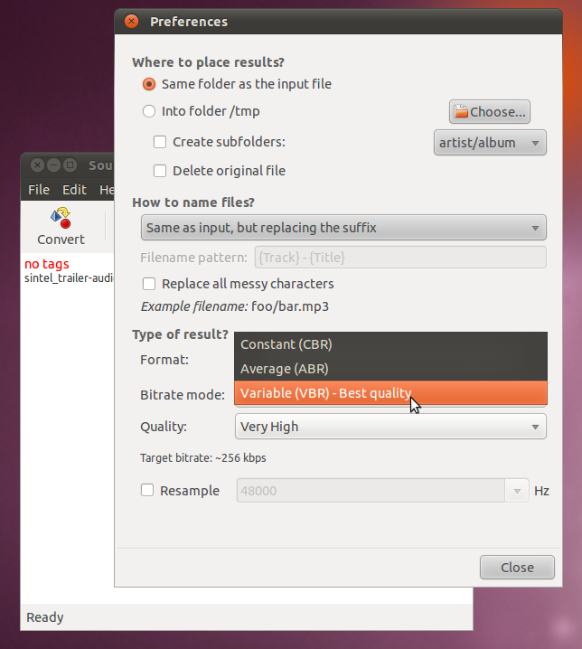
MP3 has an additional setting that OGG doesn't have here, the ability
to change how the bitrate is applied to the stream of data. There
are three options here, but we will only focus on two (with the other
two, there isn't a need for using Average Bitrate).
Variable Bit Rate (VBR) is great because it allows the encoder for the
format to lower the bitrate in portions of the recording where there
isn't as much important (and hard to compress) data and then raise it
in other portions where a higher bitrate would help to keep the
original sound intact. In the end it will end up with
approximately the same size file as if it wasn't using VBR, but the
audio will be better.
Constant Bit Rate (CBR) is what you have when you don't use VBR to
encode the audio. Every single part of the recording uses the
exact same bitrate. If you can do it VBR will always give you a
better resulting sound, but some older devices won't work with VBR, so
you'd need to encode with CBR for them.
Since the MP3 format isn't as good at compressing the audio as Ogg
Vorbis (or WMA or AAC for that matter), we need to use a bitrate of
256kbps to get to the point where the human ear can't tell the
difference with uncompressed audio. This can be selected with the
"Very High" quality setting.

No go ahead and run the final conversion and you'll have succesfully
made your conversion to all the major formats.
Just to show the differences between encoding types and bitrates, I've
created the following chart. Go ahead and download the samples
and see if you can tell the difference between them.
Bonus #1 - Rip a CD with Sound Juicer
From the early 1990's until about five years ago, the CD was by far the
most popular way to store and move audio recordings. Because of
this many people have large collections of CDs that they wish to
convert to FLAC, Ogg, or MP3 format for use on portable audio devices
(iPod, Mp3 player, cell phone, etc.). There is a tool in ubuntu
that makes this very easy, Sound Juicer, also know in ubuntu as Audio
CD Extractor.
Once you have the program open, it should automatically detect your CD
and read the information such as title and author, as well as the name
of each track and the artist who produced it. If you wish to
change any of the header information, just edit it. For the track
information, double click on it to edit it. This information is
what is used to determine the folder structure and file names.

To set some of the details on how the CD will be extracted, open the Preferences dialogue.
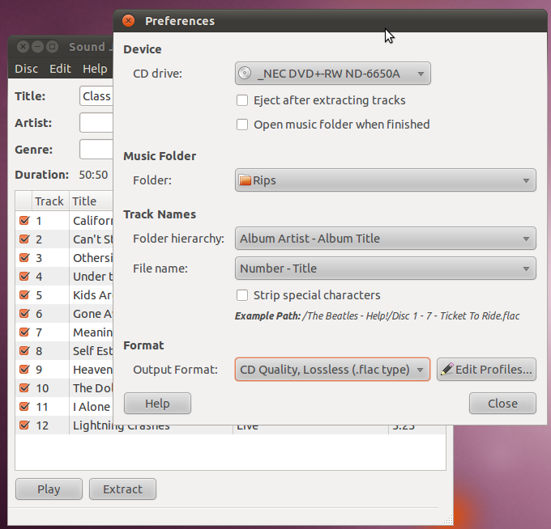
There are four important items to set here. The first is the root
folder that everything should be extracted to. This is not where
the final audio file will go (that comes next), but will contain other
folders.
The next item is the folder hierarchy. How you set this depends
greatly on how you organize you audio recording collection on the
computer. Many people will have a folder for each artist, and
then folders inside that for each album by the artist.
Next is the name of the file that will be written for each track.
Once again this depends greatly on how your recordings are
organized.
Finally is the format that the files will be written to. I
strongly recommend using FLAC for everything you extract from a
CD. This will ensure that you don't lose any audio quality with a
lossy format, but isn't as large as a WAV file. If you want to
copy this audio to a portable device, you can simply use the Sound
Converter from the last section to create a copy. That way you
can alwasy store the original, lossless copy on your computer if you
ever want a better version in the future.
Once you have all the settings figured out, go ahead and hit the
Extract button on the main window. You will see the extraction
status on the bottom, and next to each track as it is extracted.
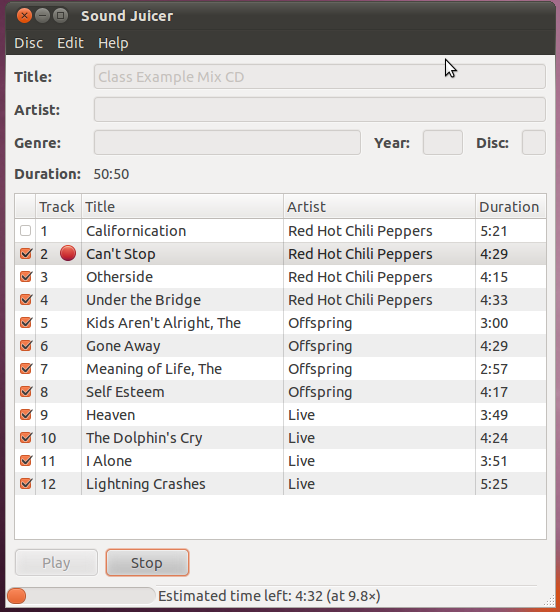
While the extraction is taking place, go and look at where the music is
being written to on your hard disk. If you didn't get the folders
or filenames right, stop the extraction, delete the files that have
been extracted so far, then go back to the preferences and fix
it.
Congratualtions you're well on your way to having your music collection available on your computer!
Bonus #2 - Create an Audio CD with Brasero
Every now and then you may need to play an audio recording in an
old-style CD player. Some of the newer types of CD players will
be smart enough to read MP3s that you have copied to a CD, but most
can't do that. Instead you need to create a CD with the Audio CD
format. Most CD buring applications will have a tool that can do
this for you. Brasero is one that handles everything from
converting your files (in various formats) to the Audio CD format and
burn it to a CD all in one step.
Simply open Brasero and select "Audio project, Create a traditional audio CD".

Then you can click the add button, or simply drag the recordings you want into the window.
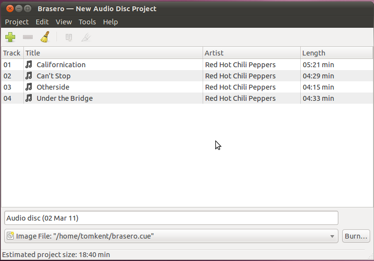
You can also drag them around in the window to change the order of the recordings to suit whatever you would like.
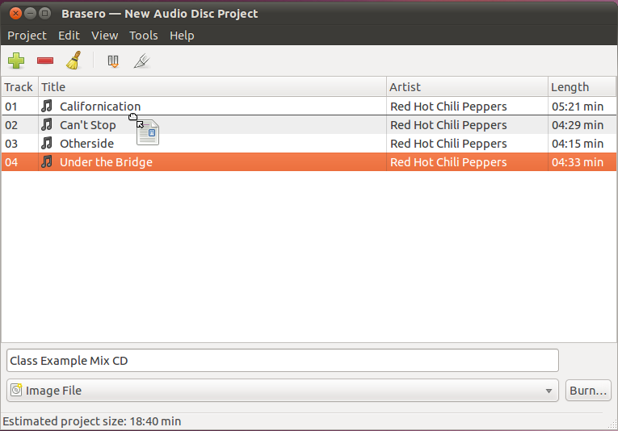
If there isn't adequate information for the recording title or artist,
click on the recording and select "Edit Information", then enter the
correct data.
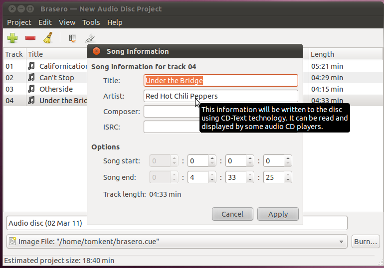
Finally, you can set the title for the whole CD in the box at the
bottom. Notice the status window below that, which shows how many
more minutes of audio you can add to this CD before it is full.

When you have everything you want on the CD, in the correct order, and
with the correct information; go ahead and click the "Burn..." button.
That will bring up a dialog where you can set your CD buring preferences.
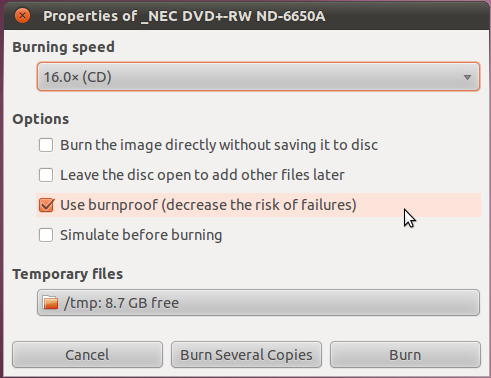
Click burn and Brasero will start converting your recordings to the Audio CD format, then it will start writing them to the CD.
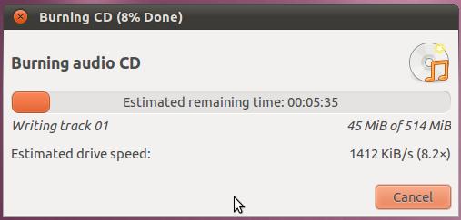
Once that completes, the disc should eject itself, and you have a brand new CD ready for use in an CD player.
Audacity
Recording and Playback
Activity
Write your answer to the following questions:
1) Where were you born?
2) What are the names of your parents?
3) What is your favorite movie?
4) What is your favorite song? Who wrote it?
5) What time did you get out of bed this morning?
6) What did you eat at your most recent meal?
7) What do you do in your free time?
Now use a microphone and audacity to record your answers to these
questions (you don't need to record the questions, just the answers you
have written out).
Listen to your answers and make sure that they are all clear and easy
to understand.
Save the project and export the audio out to a .FLAC file.
Cutting
Activity
Create a new project, import the recording of your responses to the
questions in the previous activity (the .FLAC file). Then import
this recording of the questions. Cut and move the sections of
audio around so that each question is followed by the appropriate
response.
Save the project and expor the audio out to a .FLAC file.
Channels
Activity
Follow the same steps as the previous activity (import your responses
from the recording activity, and this recording of the
questions). Once again, cut and move the sections so that each
question is followed by the appropriate response, however, this time,
keep them in seperate channels. Once everything is in order, set
the seperate channels to left and right audio, so that the person
asking and the person answering sound like they are in different
directions.
Filtering
Activity
For this activity, make a recording of yourself asking the questions
(the same questions from the recording activity). Now that you
have a recording of yourself asking and answering the questions,
combine them into the correct order, as was done in the channels
activity. To differientate the person asking from the person
answering, apply filters such as [ADD FILTERS HERE] to each of the
channels to give them their own unique, but still natural sound.
Podcast
RSS Feed with enclosure.
Live Audio
Streaming Icecast/Shoutcast....often with video.
Voice over IP - Skype/SIP
Teamspeak?
Other
Ardor - A professional Digital Audio Workstation. It is a
non-linear editor, with a ton of important features. Available as
free software. http://ardour.org/
http://en.wikipedia.org/wiki/Ardour_(software)
Podcast Generator - Program that runs on a server and manages your
podcast feed for you. http://podcastgen.sourceforge.net/
Adobe Soundbooth? Adition?
Apple Garage Band?
http://arstechnica.com/open-source/guides/2011/01/making-music-in-linux-and-beyond.ars
Attribution
Signal Sampling, Binksternet, http://commons.wikimedia.org/wiki/File:Signal_Sampling.png,
Public Domain
PCM Graph, Ktims, http://commons.wikimedia.org/wiki/File:Pcm.svg,
CC-BY-SA
Clipping Graph, David Batley, http://en.wikipedia.org/wiki/File:Clipping.svg,
CC-BY-SA
Undercover, Citizen Nyx, http://ccmixter.org/files/nyx/13086,
CC-BY
Independance Day, DoKashiteru, http://ccmixter.org/files/nyx/13086,
CC-BY